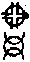

嘉興大藏經 第33冊
No.B286 攖寧靜禪師語錄 (6卷)
【清 智靜說 德亮等編 德莪等錄】
第 6 卷
攖寧靜禪師語錄卷之六
敘緣起(附三峰頌語)
歲在丙子暮春。某次參天童悟老人時。依山中結夏。值同參友蜀之瞿公笈中。撿得三峰藏和尚法錄內。有啟我雲門澄祖翁曹洞十六問。展讀無何。殊覺可異。詢諸同學。絕無定見。久之撫膺嘆曰。吾固知三峰懷先後隱疑。扣末代宗閫。欲睹去聖遺風。事非驟然而舉。雖言中不無有響。而直下亦難剖其所發。是以默於衷心。擬私其荅。若驚巨海之無涯。猶苦渝言于逆指。退而思之。未敢措于一辭。後去天童歷游雲門東山。雙徑石梁。經幾寒暑。遍扣諸方。惟護國蘊和尚。僻處窮巖。聞其大得洞上奧旨。因而走參所未盡者。一朝入室。水乳相投。頓絕向往之疑。敢不深心仰止。于是并偕皋亭具宗謨兄。其續其法。時壬午仲春也。行腳歸來。繼先十有八載。每欲揭明是問。然恐僭越當代至犯吾宗尊執。以某強作前茅。故隱隱胸次。迨今四方導師前後出世法錄。遇必珍讀。未有齒其玄論。得釋所向。近因退止松陵。杜門臥疾。偶二三子參請之暇。論及是事。欲請垂一言。以決疑似。予聞之頓然而起曰。此誠素志也。較雲門博山。交光互彩。垂荅已周。固不當更墮駢拇之誚。因讀三峰復自敘其扣問始末。并著頌內。侮慢不經。祗得隨彼發縱。貫矢射隱。首撿峰敘云。啟雲門澄和尚。門荅云姑置以俟來看。啟博山來公。亦曰姑俟面面陳耳。峰乃謂顧盻諸方。無可激揚此事者。想亦不易荅耳。由是慨然自為著頌(云云)兼是敘也。三峰一何黯忽。聾聵平生。錯過雷音電舌之機。深昧雲駛月運之際。舉步迷蹤。顧盼何預。如雲門之姑置以俟來看。峰速當向南頂謝。而猶未領其旨。復馳求於博山。山亦云。姑俟面面陳耳。二老誠謂玅唱非千舌。峰堅持以為不易答者。斯則辜負良多。豈不聞馬祖因僧問。離四句。絕百非。請師直指西來意。祖曰。今日無心情。汝去問智藏。藏以手摩頭云。今日頭疼。汝去問海兄。海云我到這裏卻不會。僧乃舉似馬祖祖云藏頭白。海頭黑。如上一案。全提正令。今古盛稱。于二尊宿所示。相去幾何。峰亦可置馬祖一門於不易荅否。在三峰分中。料不甘矣。故法之所在隱顯全該。橫坐斷於朕兆未形之始。行之所至。生滅掠盡。直消融於逆順真俗之微。得入是室者。必光大其心。嚴正其旨。甚欲向東塗西抹處。討箇分曉。未免迷繪失真。亡羊泣岐轉行轉遠。愈指愈昏。果是絕流香象幾肯作忍俊韓盧。的明第一義天決不待縱橫文彩。峰今絕不虛己自炤。以謂無有激揚此事。詹詹角立參商。乃至倒疊危機。高豎我見。且句中逞不遜之勇。貶削紛然。妄以信陵竊符私奔。魏曹篡漢等語。立陷洞山先傳後悟。將吾宗祖世承法系忍心塗污。譏刺橫流。於無巴鼻處。捏個巴鼻。而欲為人眼目。為人導師。寧不為愧。恐千百世之下。頭正尾正者。未必有然其說耳。故列彼著頌。布告大方。明辯以決其非。不作儱侗異議。庶明三峰心跡於九原也矣。
三峰和尚問云。雲嵒傳寶鏡三昧。三種滲漏與洞山者。還是過水睹影前事。是睹影後事。若是睹影後事。為何不見重參。若是睹影前事。為甚未悟。而先傳堂奧。
峰著云目前未必機銖兩睡中先付定盤星。
又云。子細不得一向。
頌曰。
崚崚石室暫相逢。良久淆訛囑付重。眼誤自開當細見。世間幾個是真龍。
師著云。琉璃古殿炤明月。忍俊韓盧空上階。
又云。大覺非同睡裏光。
頌曰。
綿密家風豈易逢。始終絕越句非重不知尾後吞蹄角。那得神針點活龍。
師荅云。三峰首陳斯問。雖影射後先疑似之有間。於始末悟脫了義之未詳。是以桂史傳訛。幾嫌受命。杯蛇誤影。暗毒旋生。立慨當途之士。嫌昔於幾希矣。且雲嵒示寶鏡三昧。三種滲漏與洞山者。乃烹煉佛祖之法藥。為剪除異見之神鋒。洞山苟不因其道。焉能脫悟後之餘知。雲嵒若不辯其苗。奚以別克家之真子。所謂是法非思量分別之所能解。唯佛與佛。乃能究盡。豈同庸流淺識。妄指太虛而欲齊管見。不亦霄壤乎。故未窺豹變。難測雷機。不跨禹門。終遭點額是道也挑剔升堂悟跡。掃盡知有餘波。非初機藥石豈驛卒銅符。固知曹洞家風。成褫不易。未有舉足不更上層樓。而能目窮千里也。若法果可傳習。事必類于講肆。噫。將誰欺。欺人乎。欺己乎。古今知識。睹參玄之客。腳纔跨戶。望影便知。故風穴識仰山之再來。浮山知大陽之有繼。安有親承槌拂。肇起宗風之祖。妄駁其先傳後悟之法式乎。較洞山始謁南泉。值馬祖諱晨修齋次。泉垂問眾曰。來日設馬師齋。未審馬師還來否。眾皆無對。山乃出對云。待有伴即來。泉聞已讚曰。此子雖後生。甚堪雕琢。山曰。和尚莫壓良為賤。泉於時心先識之之矣。所謂虎生三日。便有食牛之氣。次參溈山。機緣未契。辭行啟溈山云。還有與師同時慕道者否溈云。此去石室相連。有雲嵒道人。若能撥草瞻風。必為子之所重遂至雲嵒。于無情說法處了達其本。至辭雲嵒。猶沉悟跡。故臨行尚有末後之重拈。審細承當之再礦。值因過水。始釋前疑。乃述所偈。以明始末俱盡若大慧去天寧。於虎丘而冰泮往跡也後乃展其玄化法震海宇。指真說法。直舉當陽語示曹山尊承世系非以先傳寶鏡後悟心宗。而可昧其昔之所得。不令其後之示續也。若云更令重參。不識所須何事。若云先傳後悟。不知始悟何宗。以此正大機語。謂之先傳後悟者。大慧不應于天寧。先受圓悟所付。分座驗人後復至虎丘。打脫舊蘊矣。不見其錄中云。閱華嚴至菩薩登第七地。證無生法忍。洞曉向日請益湛堂。殃崛持缽救產因緣。驀地打失布袋。當斯時也。礙膺之物。撲然而散。與洞山涉疑過水。頓脫悟後之影。異曲同調。亦可謂之先傳後悟得麼。此若以洞山之悟。與大慧不同。大慧供招現在。若大慧與洞山悟跡不別。何爾獨具此疑。是以失探其源。沿流不止。一言欲決。脫盡乃師。洞山於先既得其本矣。豈不識睡中之主乎。峰今何更著為目前未必機銖兩。睡中先付定盤星。將欲指勺水而評滄海。一何狹劣之甚。今以識睡中主為極則。殊不知徹底後更有事在。看其頌首句。以崚崚石室暫相逢。當頭便存譏訕。因溈山指洞山石室往參。一見雲嵒。即時契悟。遂辭去(云云)。今以謂石室暫相逢。則永嘉謁曹溪。夾山扣船子。豈不暫之更蹔耶。秪恐相逢不相識。迢然舉處貴知休。又云良久淆訛囑付重峰絕不究洞山因雲嵒所荅秪這是。山便呈出個等現的見處于良久之地。嵒復驗其不盡功勛。故更與一截山時尚未敢和身放倒。向後直窮至古人到不到地。偶於過水。脫盡重開不墮區宇。立證無心之良久。還更淆訛個甚麼。不傳之旨。又重囑付個甚麼。不見佛果頌曰。水中影子因身有。若實無身影亦無。百尺竿頭纔進步。一毫端上現毘盧。前以指洞山孤滯于良久之無心。後指出頓現無心之良久。明其先知有。因而不知有。後不知有。因而知有。凡情聖見。共相回互。豈如峰之頌。茫茫忽忽。認影迷頭。嗟哉。休將閒學解。埋沒祖師心。又謂眼誤自開當細見。洞山前之所證。後之所盡。何處誤卻正眼。而云當細見耶。結云。世間幾個是真龍。若至人一徹其始。如乾元之體。不住其功。而能用九。故曰用九。見群龍無首。所作與時偕行。莫測其際。名不得。狀不得。又擬向何處見龍德耶。既統承佛祖大任。必能超天地。化萬物。興雲吐霧。擊碎虛空。反疑乎是真龍。非真龍。而不為之一辯決耶。且發言害理。以外其義。故云詖辭知其所蔽。邪辭知其所離。將欲百世莫之能違。而合行其說者。不亦謬之更謬耶。試看先德。內不欺己。外不欺人絲亳未盡。必力為之。非同末世之言過其行。以聖自居。詆毀前哲。甚欲突如來如。必至其行次且。予誠知大言不辯。恐更起于疑人之疑。以不釋其所疑也。是以并大慧一節。首而出之。
峰問若是堂奧果可先傳。又說甚麼自悟。
峰著云。若不水中見。幾乎苦一生。
頌曰。
不因度水絕來甦。定落然香受祖圖。師法既傳成紙墨。奮龍行雨在驪珠。
師著云。休看楚璧作碔砆。
又云。寶鏡不從言路得。劈開心眼是真師。
頌曰。
眼裏聞聲困早甦。謾思索馬按韓圖。相承一滴非言說濁智終難辯髻珠。
師荅云。此問首荅。悉以備之。事必准明其跡。不宜再為聲指。惜三峰未始本其所出。力欲捲空捲地。迷障人眼。故其頌云。不因度水絕來甦。定落然香受祖圖之句。始隨蹤于大慧行腳中。述其所參洞下尊宿。有臂香授受。不妄付人之語。而為實據。然大慧初年行腳。見地浮沉。雖稍有解會。於己分中。毫沒交涉。應不敢妄自承當。時猶週遮途路之悲。未能窮理盡性。宜其不勝任也。歷觀洞宗從始相承祖印。傳燈備載。未有見其如是之授受。未有聞其如是之法式。三峰總不辯大慧最初之見。反至承虛接響。潛興鬥巧。不復循理。蕩激風波於言下。欲喪至人之實。吾自知其力不堪矣。於人使可易以詐。在天使難架以偽。將不危且惑乎。未睹門庭施設之權變。寧知堂奧鎔盡之規模。且時之與人興衰不一。各宗主化。未得繩繩芳躅。以繼其道。湮沒時往往遇之。鼎盛時得有幾幾。或斯道寂寥。師家得一敏捷者。未必不獎勵以進。用意琢磨。所謂以天下與人易。為天下得人難。且爐鞴之下多鈍鐵。良醫之門足病人。但未見先有所付。而後令彼自悟也。大慧己之不頓脫者。是誰之過歟。今何得執一時之偶議。廢蓋代之家聲。相為攻擊。至暴肆求疵。以欺掩先聖之實證乎。如洞山囑示曹山寶鏡三昧云。末法時代。人多乾慧。恐屬流布。喪滅吾宗。指原始要終之大節。還可陷雲嵒先傳堂奧得麼。既不可陷。三峰一生之眼見耳聞。沒向何處去也。欲將寸澤之鯢。而鄙鯤於大舉。多見其不知量矣。洞山之悟于初。非三昧耶。後脫於見。非寶鏡耶。古云但得本。何愁末。洞山之先悟。豈非本耶。後示曹山。豈非末耶。三峰自謂濟上傑人。何至反生迷暗。請天下後世明達者。公驗其邪說之非。欺滅之狀。可行乎。不可行乎為臧耶。為否耶。夫歷代宗匠徹悟不假于人。紹隆自當承旨。展化必以師資為血脈。貫其所統。昭示來機。豈有內繼皇嗣。外膺大寶。反泥乎父作子述之丕承。而臣下不為之折節。國法不為之遵行耶。若今之玄要。必待臨濟再出。面囑其旨。而後敢行不亦迂闊之甚。況雲嵒父也。洞山子也。葉奕親承其道。反欲枉加疑似。吾恐斯問。大有失于所學。固不宜向此處為跌宕。為層巒。為左右舌。為螳螂臂。雖蜃樓海市。見日便消。簧鼓虛聲。罪將奚釋。大言著為若不水中見。幾乎苦一生。試問三峰。此處是見耶。脫耶。入耶。出耶。依住耶。滅盡耶。向這裏不覓個洞山消息。真乃苦卻千生萬劫。斯謂羅紋結角交加處。鶻眼龍睛失卻真。又云師法既傳成紙墨。奮龍行雨在驪珠。古德云。祖師心印。狀似銕牛之機。去即印住。住即印破。正與麼時。豈三峰死被知見之所印住。而不一為之破乎。如五家門庭。各具大機大用。相繼其道者。豈皆習紙墨之傳乎。豈洞山未明本分。而行雲嵒之道。假此驪珠乎。恐近代異流。搜奇變怪掩戶傳宗。以己方人者。或有此耳。殊不知法乃人之用。珠乃龍之用。豈有昧己之正受三昧。而反死抱前人之筌蹄乎。但恐人非真人。龍非真龍也。將欲布鼓雷門。誠恐自先碎首。彼此既為佛祖兒孫。當為任重。不應輕佻至是所言公。斯非公言也。所言私。悟非私法也。吾是以不可得而知其所發矣。堂奧中事。切莫掠虛。若悟其源。自當神會。
峰問若是法屬閒家具。而可以先傳。可以後傳者。又何必重於師承法乳。
峰著云。幸存一滴活嬰孩。
頌曰。
分符貴在合符同。苟不憑符何適從。只恐竊符私奔者。定然三尺不相容。
師著云。代王禪位不須憑。
頌曰。
真王不與假王同。躡足封齊何所從。待得漢文西向後。公私言路豈能容。
師荅云按此一問。峰擬欲曖昧其源。傳亂天下。使後世疑之快其私意。遽然自得。獨尊一家之統。悲哉。三峰何苦亟亟蓄心乃爾。不知心要。目為何物耶。顧從上先德。師資法印如火傳薪。蓋知洞山參請徹旨。所繼慧命。非荒唐遙指。影射虛承。料不同晉代劉淵。妄依漢統。據何所見。直譏洞山以法屬為閒家具。而不重于師承法乳耶。倒引魏信陵竊符私奔。力將誤入人罪。以相欺蔽耶。且洞山之刱始也。德配靈峰。功超少室。作用嚴正。宛似純金。萬世之下。誰不尊之仰之。戴之佩之。今欲疊亂其師承之分所貫之道。三峰何所見。而敢暗行貶剝至是耶。犯何條款。頌為三尺不相容。耶無根害理。過難屈指攷景德傳燈錄。洞山悟無情說法。遂述偈云。也大奇。也大奇。無情說法不思議。若將耳聽終難會。眼裏聞聲方始知。余讀至此。遽云則早存一滴活嬰孩矣。山後辭雲嵒。嵒曰。什麼處去。山曰雖離和尚。未卜所止。曰莫湖南去。山曰無。曰莫歸鄉去。山曰無。曰早晚卻來。山曰待和尚有住處即來。曰自此一去。難得相見。山曰難得不相見。山又問曰。和尚百年。後忽有人問。還邈得師真不。如何秪對。嵒曰。但向伊道秪這個是。山良久。嵒云。承當個事。大須審細。山猶涉疑。後因過水睹影。大悟前旨。因有偈(云云)又五燈指月等錄。載雲嵒良久曰。秪這是。山沉吟。又有載山作禮者。紛紛不一。較傳燈載山良久處。正呈所見之謂。言下投機處也。如按別錄。則問荅全不一氣。據洞山之良久。乃其始悟時大題大目。未可輕易。惜乎今古尊宿。等閒看過毫不著重。審訂其實。任聽截長續短。以恣邪說。且如雲嵒因山一問。便爾當場分付。山雖欲力任。但不能直下無垠。是以嵒之再舉。至山之再礦。消法執之微芒。斷末後之根蒂。今作雲嵒良久。雖於示處可用。然在知有相參。絕無意味。故以傳燈為實據。斷不可擬定雲嵒之良久。而非洞山也。況嵒又未見山一語。何以便言承當個事。大須審細。山前又沉吟。後又涉疑。若果如是。則昔日所得處面目何在。故山之良久。不當改作沉吟。每思後人所載。鳥焉之誤。其過不淺淺也。且景德傳燈系大宋道原禪師編次賜入龍藏。師系法眼下二世孫。當真宗時。道欽四海。明賢與之。核實驀修筆定。頒賜流行。敢以洞宗之始祖機緣。而不為之一詳細乎。但年世積遠學者寡識。不能推詳本真。翻然異論。事不師古。擅為批削。余是以遵上古而明之。山嶽可使之移。江海可使之竭。唯斯正眼。斷不可更也。今三峰總不較前人舊案。錯疑後有波瀾。妄議雲嵒良久淆訛囑付重。以法屬為閒家具之非。試問洞山辭雲嵒時。非比香嚴之去溈山而先未有所悟者。但猶沉悟影。纖疑隱隱。直窮至不坐最初句。不墮末後句。體盡無依。香飄果熟。然後出世拈香。豈非光明正大。赫奕之師承法乳乎。蓋昔亦有不重師承法乳之恩者。如開聖覺。初參長蘆無所得。次依五祖演發明後見長蘆法席鼎盛。遂往嗣之。拈香時不原所得。忽胸前如擣。發癰成疽。竟以疾卒。此非欺滅師承萬代之龜鑑乎。如是法印。還敢作閒家具耶不耶。但近代師承。與古大異。昔之參請者若於一言半句中。稍有得力處。未敢自忽。人天眾前。必為酬報。今之相承法乳者。或背或向。或與或取。或好高自大。埋沒所參。或未經囑付。妄為繼統。彼此捏虛。終身杜撰。惟觀門庭熱鬧。生滅為心倒換新奇。朝秦暮楚。不知師承法乳。可如是之重耶輕耶。吾固曰。三峰當痛惜子今時。不應錯疑于先哲也。末代惡風甚熾。習沿大壞。恬不知怪。寄深主盟斯道者。若單絲繫于九鼎。更混亂於無可繫之日。寧不一為寒心毛豎乎。懇力為荷之慎之。毋欺毋忽。
峰著云。魏禪應知愧舜韶。
頌曰。
春秋一字但誅心。詭御從他傲得禽。握法不嚴成自負。室中千古貴惟欽。
師著云。佛祖典型。賴有此耳。勿則野狐涎。直流今日。審如是言。震懼震懼。
頌曰。
神鋒凜烈斬機心。未許談禪劇七禽。雜毒信知難入耳。雙雙嫩桂固宜欽。
師荅云。誠哉是言。切於學人偷心未死之大害。急於道者明真辯偽之大防。若非真正種草。久之悉作假雞聲韻矣。無實證者。觸處鐵山當面敢。不自為覺察乎。寥寥末季頹綱。歷歷誰為聲援。正所謂繩床腳下聽去。招感禍殃不淺。況云可以先傳。可以後悟耶。如古斲輪之小技者。父尚不得而傳諸子。況大道乎。果得之於心。必應之於手。則我王庫內。無如是刀。峰何至積疑不已。而更矇瞍。豈能善之為視乎。善之為作乎。徒使言高而目遠。跡廣而心雄。既亂空華之障。復傾眾響之沉。無奈洞山眼裏聞聲。不須耳授。峰必禁錮其說。何異柳生于肘。而盲然不知物化。誠如峰論。當令雲嵒。向常寂光中。再將起之囑之。或能銷鎔其倒見乎。惜哉不識洞山之始。應昧其終。故死執定睹影前之未悟。睹影後之方知。滅其神化之忘功。誑侮孤輪之獨照欲盈所志。須將洞山過水前之實證實據者。欺沒得盡。庶幾得行其詐。勿則皎然事蹟。恐愈掩而愈明。徒將魑魅之蹤。妄搏獅王之步。將欲戕古以自勝。豈其然乎。試問唯欽之道。掣電之機。未審可使深相傳習而為悟耶。五家之宗。立法之始。未能入其室者。可令統行于萬世耶。若謂遞代綱宗。師師可據。何至洞山直證雲嵒之道。親荷雲嵒之法。骨尚未冷。反不容於統承大旨。深毀其先傳堂奧耶。繩床下聽耶。并著以魏曹篡漢。不及舜之受禪。汙篡逆之訛言。亂傳燈之疑始。峰之所謂。正乃一字誅心。自狀其過。速當痛為切戒。毋至欺陷百端頌中又以王良詭御獲禽而比托。大似醉夫說夢。亂指西東。將沒洞山為嬖奚之儔歟。閱此不覺可怪可疑。可悲可笑。夫尊古敬賢。其德乃大。峰反聾昧於見聞。頑嚚於心口。棄德崇偽。昧公泄私。千古之下。未見有登祖席者。橫肆舌劍唇鎗。作此惡聲。全無忌憚。法門豎異。害莫大焉。請觀濟上之青天霹靂。旱地波濤。洞下之觸背俱非。如大火聚。一扣其法。似忤逆聞雷。若由基神箭。滅盡學人偷心。搜盡野狐窟宅寶鏡高懸。藏竄無地。敢云握法不嚴成自負耶。豈有斯道。同世俗之幻術。沿習於秘授耶。欲假鉤繩而釣古。待膠漆而固今。於其正也。反為削之。斯峰未返天倪之上。故傾積毀之風。徒以自高而身殉者。不亦莽蕩乎。每思楊墨之見。雖謂偏執。然亦不言可傳之實法。豈先聖以心印心之道反相搏擊。使混常流耶。峰既於濟上久專大任。不當存心生滅之場。啍啍欺世罪將何辭。故曰欲得不招無間業。莫謗如來正法輪。仰祈明眼作家。畏慎惕勵。直示後學。庶使法道綿綿。弘揚萬億以垂不朽。幸甚。
峰問五位君臣。既是闡揚不少。為甚又說個五位王子。畢竟是兩義耶是一義耶。若是一義。石霜九峰料不多事。若道兩義。請判意旨如何。
峰著云。寒泉品後煮茶香。
頌曰。
既分貴賤辨疏親。密闡玄宗不厭頻。面面好山披洞府。脫然蛻去邈仙真。
師著云。升壇推轂原非細大賞難論蓋主功。
頌曰。
傍分正化絕疏親。借位明功挾路頻。不賞元勳知奉重砉然玅指響天真。
師荅云。提綱挈領。固非言象所明。透網離巢。拈弄何妨活潑必欲傍搜註腳。恐教玷辱先宗。緇素若不分明。必至囫圇吞嚥。一義兩義不別根株。王子正偏。大有同異。寄語參玄上士。應知格外玄機。正中偏。宸宮開曉唱。偏中正。鳴珮仰堯天。正中來。石女下粧臺。兼中至。剖符知定鼎。兼中到。臣主豈能明。透此一位。以徹主中之主。以別誕生之父。雖曲盡其法。無以少加。但皇王根本勳位之不同。主主依正攝盡之難別。故石霜慮彷彿於金枝。九峰懼尊崇於久御。直使功勛不借。隱顯大開。如吾宗要訣云。古鏡臺前。子轉身而就父。兒孫得力。貴乎室內不知。夜明簾外。臣退位以朝君。不令而行。玅在借功明位。王子五位者。誕生內生本出之無殊。在朝末化生之有異。如位尊九五。宇宙一人。貴無倫匹。天王之下。降一級者。有內紹。有外紹。本不同其位。故各司其化。內紹者。位立儲君。根本同出。雖天然尊貴。但欽承帝父。秪奉一人。謂之主中主。外視臣僚。巍然獨立。隨處稱尊。即根本智也。雖分兩位。實是一君。根本不清。豈知轉位。必活遭其錯亂。那明悟後再參。以得大機。以顯大用。故曰內紹誕生之設。有是來矣。外紹者。公侯伯子男。以功勳而至。雖不同內紹。亦秪奉一人。各秉其權。輔贊化育。謂之萬行等莊嚴亦不犯功勳。必須一念回機。始得全身奉重。如閫外威權。惟聽將軍令。不聞天子詔在外各嚴其職。在內共戴其君。若矜不賞之勳。肆跋扈之亂。一經悖逆。非惟自失本真。亦且不能他受用也。謂之理事俱背。如華嚴六義。有成相。壞相。別相。同相。總相。異相異中原有同。同中原有異。所云是法住法位。世間相常住。脫斷常邊邪二見。絕能所去住之關。故不可以有心知。不可以無心會。揀明六相。和合作舍。各不觸犯。極則處。正眼難窺。垂手時。大千任運。君臣賓主。內外互融。海闊淵深。古今無間。豈可參差上下。混配其宗。了知出沒洪波上須假弄潮人。如著云寒泉品後煮茶香。諦當甚諦當。若知一味。百味具足似乳中酪。酪中酥。酥中醍醐。若離乳體。則無以成。雖等則有別。於體本仝。無奈鬥搆輩。每纍瓦結繩遊心竄句。絕不知全鼎大臠之味。終身役役。曾未染指。計為自得者。誠謂得人之得。而不自得其得者也。或於法要中假令渾成相似。緇素又不甄別。大似盲人摸象。誠如峰云。脫然蛻去邈仙真矣。抱鉛爐作丹鼎。甚是可憐生。欲得不乖大旨。登其絕頂。請再究始終之大。向奉之深。於修證原有階梯。在運斤絕無朕跡。方曰裏頭人。不擔屋裏事。學者知此。則思過半矣。其外者。折衝萬里。裂土分茅。但久駐封疆。則不忘於帝力。猶妨野老之歡。故曰修證即不無。染污即不得。弘法之源。蓋本於茲。恐不盡其所問。更布葛藤一上。稍明大略。欲透法身向上關捩。無越此耳。還委悉麼。雲中木馬嘶聲切。焰裏靈苗結子多。參玄之士。切莫草次放過。不負良工苦心。勉之勉之。
峰問五位君臣。曹山言正位。即空界。本來無物。偏位即色界。有萬象形。正中偏者。背理就事。偏中正者。捨事入理。兼帶者。冥應萬緣。不墮諸有。非染非淨。非正非偏故曰虛玄大道。無著真宗。從上先德。推此一位。最玅最玄。問空界色界。說理說事。既是曹山語。為甚大慧道。說理說事。教有明文。教外單傳直指之道。果如是否。若果如是。討甚好曹山耶。且道曹山意旨如何。
峰著拍案一下云。是偏耶正耶。是空界耶。色界耶。是理耶。是事耶。會得者。冥應萬緣。不墮諸有。非染非淨。非正非偏。惟此一位。不會者。一任分君臣辨五位。錯認兼中到為兼帶。可惜許也。
頌曰。
東來西去共浮沉。輥出囫圇格外音。若向末稍烏炭認。又成單板費沉吟。
師著云。當堂不正坐。那赴兩頭機。
頌曰。
橫穿向背絕浮沉。啐啄之機異鷇音。尊貴位中知不住。豈珍枯木有龍吟。
師荅云。先德激揚個事。展化多方。或建立或掃蕩。或隨立隨掃。隨與隨奪。總要當人脫卻貼肉汗衫。非教人守株待兔。隱顯言中為標的也。故曰法無定止。去病為良。解撥金針。瞳神立轉。乃至明耶暗耶。色耶空耶。拈來悉作倚天長劍。直使石女血流毛卓豎。虛空骨碎眼迷光。若必泥其言路。則背水之陣必敗。曳柴之勢宜亡。要在殺活臨機。用非死執。是以曹山之建立。出無中之有。大慧之掃蕩。去有中之無。透過者關鎖齊開。迷沉者町畦自劃。又何必凝滯師家言路。探指顧蹤繇者哉。且五宗法要瞿曇老漢。早已露布于三千年之前。幸有後代兒孫。作略宏遠。傑出前人。能超佛祖之見。故具佛祖之用。如涅槃[、/(、*、)]字。三法不共。嬰兒之行。五相鉤連。滿字半字。同別總異。雖熾然應萬。而無有窮。於五葉一花。豈分根派。綿密也。箭鋒也。顧鑑也。六義也。暗機也。高撾毒鼓。截斷來去羈縻。縱奪自如。推倒死生墻壁。幸有三峰力專斯道。探出秦宮之炤膽。究明刮瞖之金鎞。直衝雪月蘆花外。自可披衣向後看。如頌云。東來西去共浮沉。果能化堅礙之疑。絕遷轉之患。則雲來雲去出沒無心。十方剎海一毫頭現。豈逐浮沉定見。耽取舍於其間哉。次云輥出囫圇格外音。斯謂一句合頭語。萬劫繫驢橛。將欲搜玄抉秘。徒增影響之知。反落塵毛之劣。秪如道聚不成團。捏不成碎。擬向何處輥出囫圇耶。結中云。若向末稍烏炭認。又成單板費沉吟。透得至微之奧。於大功不住。逢御飯不餐。破微笑之風。肆拏雲之手。撥著如獅子音。吼遍吼。如法樂音。等遍吼。何至反費沉吟耶。所云若將耳聽終難會。眼裏聞聲方始知。試看洞山頌云。兼中到。不落有無誰敢和。人人盡欲出常流。折合終歸炭裏坐。峰將此頌。錯擬其意。言總能透得五位。亦不過在黑漆漆地履踐。認定洞山之末稍竟墮死水。全不為貴。呵呵。不亦淺見浮沉。將比量而作現量。較洞山首句云。不落有無。謂格高調古。和者誠難。學人不識玄旨。相將競出常流。但不知一有所異。便成滲漏。何得云到。是以密移一步。竭玅化以無方。垂手交參。齊古今於一念。直透二邊生佛不名之要道。通結回互兼到終始之提綱。所謂混然無內外。和融上下平。故名臣主相忘於古殿。豈云認定烏炭費推敲耶。如洞山問龍山云。和尚見個甚麼道理。便住此山。龍云。我見兩個泥牛鬥入海。直至如今無消息。看看。請開頂門之正眼。始堪空裏弄空華。速透悟後之覺場。稍許夢中來說夢。則不誤指脫影為見影。絕處為坐認。非以三玄而不同五位。死定在棒頭上。方絕人氣也。非以教有明文。而曹山說理說事。不同祖意也。但願空諸所有。慎勿實諸所無如是不妨有理有事。有主有賓。有玄有要。有正有偏。立證無身有事之大用。不貴勳勞所至之藩封。頓伏千妖百怪。掠盡十地三賢。消多知多解之壅塞禪。點無作無功之正命食。得弘其化。豈不偉歟。遞後之操進者。毋使不明綱宗。左右失顧。識些子利害。再令冰河發焰。鐘鼓重新。是知此問不弱。
峰問既單取五位。為從上所推。則今之悟者。全在裏許。安身立命。為甚出語。多是正中偏。偏中正。
峰著云。直須恁麼會始得。
頌曰。
從來雙足走西東。起坐分明不住功。脫履上床沉睡後。一輪圓月掛高穹。
師著云。星河垂玉漏。北斗面南看。
頌曰。
夜半金烏出海東。坐深鰲背懶施功。橫穿古道抽身疾。不借冰輪炤碧穹。
師荅云。偉哉斯第一義。不規而圓。不矩而方。一中繩墨。則傷之觸之。忌之諱之。無病不發矣。故忘言則得意。忘法則情枯。拔盡瑞草靈苗於劫外。倒拈龜毛兔角於今時。故先聖立旨云。雪覆萬年松頂。夜半正明。雲遮一帶峰巒。天曉不露。是以垂手處。正中有偏。暗不住暗。偏中有正。明不住明。卸卻通身甲冑。立見太平。勿令久住長安。風光八面。巴歌絕唱。雷驚枯木之花。玉線橫穿。拽斷泥牛之鼻。挾路頻頻。機通回互。無位次中明位次。有雙關處絕雙關。該而全其萬化。不羨大千之富。返而一以難收。奚輸徹底之貧。一朝撲碎玉屏風。方信晶簾終不貴。若投子因僧問。大死的人。卻活時如何。荅云不許夜行。投明須到。此即直下裂斷兩頭。雙控俱虛的句。稍具眉目。則知雪樹梅花開午夜。月巢老鶴早騰空。亦且那邊不坐萬年床矣。古今師匠。承嗣其宗者。若庖丁之解牛。非斲輪之糟粕。與諸佛祖。同一自在。同一玅用。言滿天下無口過。行滿天下無怨惡。若但知其所用。而不知其所不用。大似王子寶刀。指空說夢。非兼帶而終沉莽鹵。識觸犯而始徹精微。若不悟銕鷂凌空。奚以測鵬飛萬里如頌脫屣上床沉睡後。一輪圓月掛高穹。據斯所證。猶存毫沫之知。尚涉瑕生之累。向這裏一刀揮得斷。返聞涓滴非聲。冰壺無影是名大解脫門。大總持門。如云起坐分明不住功。果爾從緣不借。則知一念遍塵剎。不勞雙足走西東矣。還見玅協弘通的的意麼。直待石人毛卓豎。始知明暗一齊蠲。
峰問大慧言。四大解散時。心識已昏。如何回互。既回互不得。定闖入驢胎馬腹去也且道此時。作何諦當。
峰著云。甕中不走折腳鱉。
頌曰。
地閉天凝凍轉加梅因寒徹迸些花。若於白處看消息。大是尋春截樹丫。
師著云。不借借中方始貴。脫然來去未為奇。
頌曰。
湛守靈知病轉加。香煙脫去眼生花。直須踏破澄潭底。不喚珊瑚作樹丫。
師荅云。吸乾滄海。玄珠豈墜蒼龍窟。衝開霄漢。桂輪不貯古寒潭。萬邦靜而王化忘。四海晏而狼煙息。拔無根草。斷筋骨於有住之鄉。弄死貓頭。碎髑髏于識盡之際。秉大公不世之法。絕窺窬紊亂之私。若不辯其輕重之關。必混亂於玉石之誤。故師家出語。揭古示今。大須審細。雖抑揚不一。但為佛祖權衡。人天標格。不可陽施陰奪。顯己滅人謂之道者家風謂之禪宗命令。較大慧指心識已昏。如何回互一問。雖偶拈示於昔時。實有沉埋於大意。且濟宗如大慧之福慧圓滿。行解具足者。誠不多得。弘揚斯道。海內傾心。九重顧問。非唯本宗之門庭死拈活弄。而四宗之關鍵。無不披靡。安有將回互大綱。作生死岸頭事。以勘學人乎。如是。則坐脫立亡之應可貴。沉空守寂之必宜珍。於大法何有哉。設為是問。蓋權宜所發。針拶初機之輩。或有是事。勿則大相懸隔矣。雖曹洞亦有回互中直截者。或臨濟亦有直截中回互者。然于旨趣。大不可溷。一失顧其建立之本。必至困守靈知。隨波落炤。可不細參乎。且回者。徹過威音那畔之根源。互者。攝盡今事門頭之玅用。先後不居。依正互攝。始起于石頭參同契云。門門一切境。回互不回互。回而更相涉。不爾依位住。痛拶偏枯。舉之密密。示之拳拳。次傳而有雲嵒寶鏡。再傳而有洞山五位。相繼得有曹山三墮。闡揚大化。建立門庭。當曹山時。頓絕紙衣依倚之功勛。後有九峰未肯首座全身之脫化。剪除根塵器界之依光。截卻有證有修之巴鼻。不貴坐脫立亡。秪為見處墮偏枯。任爾舍利通身。勿若臨機能轉步。審如是法。豈可以荊棘園。同列栴檀之座。宸極殿。相看草莽之塗。蠱毒反作醍醐。草賊目為真主。通宗通塗既不辨。挾帶挾路豈能知。若以去來不昏。為回互之極則。紙衣應徹底多時。又何待曹山。向末後施不借借之鉗鎚。始得斷依依之根本。到此地具得半隻眼。誠謂吾宗下刃更利。發藥甚毒。絕蓋代之功。非廉纖之病。到來懶去攀雲樹。回首誰誇鳳閣風。透盡紅塵堆裏生涯方知大熾焰中吐舌。故曰縱饒枯木生花去。返炤荒郊不值錢。豈云梅因寒徹迸些花。而于功位上強作主乎。既不識跡混塵埃。而敢明其挾帶乎。古德云。黑白未分前已過。又豈肯向白處看消息。而待尋春截樹丫乎。首句以地閉天凝凍轉加。不過學人進修階級。總使寒威徹骨。不能攀虯龍而驅虎豹。穿嵒壑而入煙波。秪可望隔籬之觢何嘗睹露地之牛。將欲透金針而穿劫外。以窺其奧者。吾未之見也。又著以甕中不走折腳鱉。可惜三峰一生行腳。全身困在甕中。若不打破甕時。直挨至彌勒下生還無起日。絕不聞莫守寒嵒異草青。坐斷白雲終不玅。故將大慧一語。看為實法。誠如所見。當作回護字用。不當作回互旨看矣。若易乾坤之互卦。無互中而有互。舍一而進。疊以成之。絕內絕外。神化莫測。餘互亦然。是之言互者。用如轉環。古人立法味此。若毫忽之差。則不應律呂矣。針拶不入。水灑不濕。猶是打瓦鑽龜漢。若不向露柱揚聲處。討個分曉。正好坐參三十年。或失腳迸斷紅線方知石頭路滑。宜深心密證。不宜坐守枯樁。吾固云大慧斯問。倒弄顛拈。或未可測。遞後之俊傑。欲追求斯道者。得向大海裏翻個轉身。則不指涔蹄勺水為巨浪。久久或堪仝入此保社。
峰問景欣言見解人多。行解人萬中無一個。若識不盡。敢道輪迴去在。且道識盡底人。畢竟是見解。是行解。即今日應萬事。在那裏安身立命。
峰著云。腳底知前路。
頌曰。
髑髏乾盡生青草。不借流螢一線光。敲到第三雙眼直不知入地上天堂。
師著云斷碑橫古路。霜月豁虛懷。
頌曰。
敲風打雨渾閒事。轉覺難同絕頂光。迸出海門秋後影。尚餘殘炤落虛堂。
師荅云。交光互彩。彼彼同明。識盡無依。見行俱徹景欣斯語。病學人之理事未圓。過在行說不到。非萬中無一二也。所云見到者。握土成金。觸處圓滿。理無礙也。超諸見量。離諸有作。事無礙也。不取一法不舍一法。理事無礙也。體用渾忘。理事不立。事事無礙也。若猶存見諦。是名食不消。如黑夜見物。開口則墮理障。所作則墮事障。安得行解相應乎。現前既是黑漫漫地。識情流注。何必待眼光落地之輪迴乎。若不得其真。似葉公迷筆下之龍。能忘情於見。如李廣穿烏菟之石。果得真見。則見且不立。況一切作用而不圓滿乎。自能坐致太平。高蹈毘盧。我為法王。於法自在。復欲問其識盡底人。畢竟是見解乎。行解乎。日應萬事。在那裏安身立命乎。呵呵。目前山是山。水是水。人謂之嬰兒。吾亦與之為嬰兒。人謂之町畦。吾亦與之為町畦。吾亦不知有見解。有行解。亦不知識盡。識不盡。在天而天。在人而人。故曰四海之濱。莫非王土。率土之賓。莫非王臣。既盡髑髏之識。必豁正眼於頂門。能誅不戴之臣。荒服悉歸於闕下。山河眉目裏。又何須問取腳跟。萬法一微塵。決不假螢光半線。峰沒卻景欣活路。自遭眯眼重圍。故著個腳底知前路。余不妨為汝添個註腳。乃云終是黑漫漫。其頌中道髑髏乾盡生青草。余一喝云。猶有氣息在。次云不借流螢一線光。余云秪恐全身在裏許。又云敲到第三雙眼直。余云亦非至寶。結云不知入地上天堂。余云終是亂走。據此一頌。本無大過。何至逐句破消。非搆言路之風濤。為剪執迷之所向。不得不為一按劍也。如前二句。以洞宗髑髏無識眼初明。今頌為乾盡生青草。宛若腐螢一線之光。終不能全彰見行。勿須寶也。唯言所重。全在知玄而復知要。一一敲去。敲到第三句。則雙眼始直。髮尖上迸將出來。天堂地獄。獨步超方。以他宗之淺劣難同。吾法之優深可貴。宛如博奕。渾似鬥雞。既不忘見執之波。奚以消權實之用。總於出生入死。如花開花落。遇順處逆。似流水浮漚。斯雖履實地而不辜。但猶倚功勛於力馭。況欲向法鏡內。數白論黃。每誇驚人之業。恐遭明眼之譏。急令鑽得透。敲得直。要且未具見解之圓滿。行解之相應。殊不知煖不在火。涼不在風。明不在日。暗不在魄。會得毘盧不墮凡夫。不會普賢失其境界。是故螢火可熱須彌。滴水可浸巨嶽。不起于座而遍塵剎。不假一法。而徹蠛蠓。大千捏聚。萬類全該。豈可列瓶盤之有異。目釵釧以無同。既不沒升沉之見。必當和萬竅之音。峰果不存秦楚之別。則刮盡景欣熱腸一片。究空無住住。裂破不聞聞。末法所賴。在斯一舉。讀者事當審諸。
峰問子歸就父。又道推爺向裏頭。且道推者是阿誰。既是推爺向裏。誰是同時不識之祖。
峰著云。秤錘落井又泥深。
頌曰。
翻轉青銅鏡背看。硃砂斑厚壙泥乾。光生不用揩磨舊。漢製從來體自圓。
師著云。丫角崑崙齊伏道。謾教帝釋放天關。
又云。禹蹟功雖異。難明大舜神。
頌曰。
無事無身未易看。始終機盡見情乾。夢回石女來新炤。不借菱花點缺圓。
師荅云。法燈朗照。方知見底浮沉。正令當行。須假重瞳再鑑。封簾掩密室之風。絕侶脫交參之路。是以靈苗瑞草。野父愁耘。玉鎖金匙智人不顧。非因木蛇夜吼。寧知腦後神光。未逢達者之儀。怎得瞎驢滅卻。說明說暗。固是空拳誑小兒。論要論玄。應識假途滅虢計。若得全超不借。則能推祖父於裏頭一朝掩鼓息旗。事可罷登於廊廟。推者乃轉位也。滅根本心也。根本心滅。則超過現量。不問帝鄉之遠近。誰驚暮夜之非常。是以古德云。賓主睦時全是妄。君臣合處正中邪。禁殿無人。誰拂清風于白畫。碧梧去鳳。任教明月落重臺。法執盡而見地圓。根本脫而理事徹。直窺髻裏玄珠。可別輪王至寶。如金光明經云。如來言三種身。依諸伏道。起事心盡。依法斷道。依根本心盡。依最勝道。根本心盡起事心滅故得現化身。依根本心滅。故得顯應身。根本心滅。故得至法身。既云教外別傳。何使提挈綱宗。假令別有規模未免斬頭覓活。若果如是。未夢見在。若不如是。未夢見在。急須蕩盡聖凡情見。方能不滯尊貴階梯。如峰著為秤錘落井又泥深斯謂藥石除。而反墮膏肓之疾。鉤餌脫。而復遭羅網之悲。滯十成之死句。困相似之疑城。見處既帶瓦礫。發言難印宗乘。欲識同時不識之祖父。舉步亂雲迷四野。攜笻無路透孤峰。如頌云。翻轉青銅鏡背看。不聞古德云。向道莫去。歸來背父。又何許鏡背看也。次云硃砂斑厚壙泥乾。好個摩空句子。不當落在點劃場中。所云易分雪裏粉。難辨墨中煤。當悟綿綿化毋之機。寂寂真風一段。峰既將穿密室。何陷顧貯之泥塗。更沒文彩于琢削。豈能絕眾響而豁天真之提唱乎。宜知語帶玄而無路。舌頭談而不談。又云光生不用揩磨舊。秪如古鏡未磨時是個甚麼消息。末云漢製從來體自圓。不見寒山道。無物堪比倫。峰又用製作麼。無有譬喻能喻此法。總製得圓。早已缺陷了也。將欲古之又古。深之又深。竭力摸寫。逼真得盡。不知弄巧成拙。揀點將來。料掉沒交涉。住住。既道向亦不是。背亦不是。畢竟如何即是。一喝云。鐵牛撞倒帝釋宮。百億須彌汗如雨。
峰問曹山立三種墮。註者言師凡言墮。謂混不得。類不齊又明安不受食。是尊貴墮。須知那邊了卻。來這邊行履。不虛此位。即墮尊貴矣。且道曹山三墮意。畢竟是那一種。
峰著云。從來不借雙關路。鉤鎖中間直下拋。
頌曰。
這邊那邊都不得。合水和泥總不知。牛斷鼻繩湖草綠。牧童濃睡月低垂。
師著云。落日海潮夜。秋光腦後看。
頌曰。
天水勿違明舊德。群龍無首殫餘知。挾類混然成錯吉。門庭三五不須垂。
師荅云。閒花野草。橫鋪古錦化春工。山色溪光。密布真風超象外。全身入荒草。徐行足跡混塵埃。脅右書半行。獨許狸奴知個事。分明頭角宛轉巴歌。故曹山有三墮之神樞。大珠剖絕向之正受。其法也。如鼎繫足。不煩輕重于其間。似月穿波。忘所合流于徹底。明安復為布置。一以折三。以三冥一。亦不另擬隨類墮之等則。尊貴墮之差殊。故云此三墮須明轉位。是以先聖立法。竭盡無餘。搏沙全琢玉之功。函蓋有藏鋒之勢。且曹山始云。直須回互。末云將為墮。且不是同也。若使回而不涉。必貯金城久止亢陽。終遭旱魃。一踏到底者。透石穿雲。三搭不回底。迷蹤失步。敲出鳳皇骨髓。蒼梧空月露之形。倒拔獅子之筋。鸞膠絕絲桐之響。等閒嘯月高岑上。要使清風刮地來。墮之之意。大矣哉。興無緣慈于大覺之場。作不請友於含生之類。故教中有諸佛退位度生之義。佛非有位也。但居尊貴一路。則無度生分。若不令回機。眾生無出頭分。故曰。轉位就功。解珍著敝垢之衣。轉功就位。治水歸神禹之化。本非物格。東方入定西方出。亦非格物。南方人定北方起。男子身中入定時。女子身中不留意。故佛不住佛之尊貴。長鯨一吸海水盡。菩薩不住菩薩之功勛。森森露出珊瑚枝。向果海中。倒駕慈航。一音演唱。令其隨類得解。返觀生佛平等。了知無佛可成。無生可度。無行可修。煩惱涅槃。究竟永盡。如云大通智勝佛。十劫坐道場。佛法不現前。不得成佛道。果若有佛可成。有法可現。豈得鎔盡規模于大冶。消除法見于當途者哉。是以一徹不受食之義真俗融通。了然無一剩法矣。如云這邊那邊都不得。合水和泥總不知。斯堪識異。類之權。超言象之表。控神駿于四海。尾絕纖塵。駕金車於白社。步潛芳草。出豁古人大意。直分隨墮玄津。言深法玅。理到事圓。如末云牛斷鼻繩湖草綠。牧童濃睡月低垂。是意本出宏智四借頌中發源。然宏智雖云識盡甘辛百草頭。鼻無繩索自優游。但其結個不知有去成知有。始信南泉喚作牛。以借借不借借。出曹山墮旨。始終一貫。今云牧童濃睡月低垂。人法隱隱尚存。不過露地安眠。牛雖純逸未忘拘牧固貼然猶有待此正是功行邊事。豈能證入不知有去成知有耶。於此不盡。安能回途得玅。而堪合水和泥耶。故云恐未徹其底。所云脫盡唯珍之至見。能通萬類之齊聲。戴角披毛。隨類自在。方得塵塵混入。剎剎圓融。作人天依住。為大地指南。如明州布袋。普化木鐸。真俗不違。始終超越。奈何今之學者。雖得一線之麤知。未徹雙輪于足下。將使搗巢穴而碎須彌去御樓而行草野。以決槍榆之勢。思同海運之興。寧有是事哉。誠謂門裏出身易。身裏出門難。冷地回頭一覷。總似錦獄安身。猶帶幾重枷鎖。而欲自他俱利。誠為從井救人。豈不自相欺陷乎。是以羽毛不備。難透九霄。藥病未除所行窒礙。直須空洞無物。表裏精微。培風摩背。不為天閼。有攫霧拏雲之勢。翻江攪海之能。然後可活醃透網金鱗。重煆悟後骨髓。於是無位可居。瀟灑任溪山之異。無法可示。錯然制大用之機。不寶空王之殿。誰珍有治之風。故寂音頌尊貴之旨云生在帝王家。那復有尊貴。自應著珍御。顧見何驚異。闡揚既盡。靈鑑休違。神化無窮。如指諸掌。目其入草求人。老胡再起。何以加焉。得明三世諸佛不知有狸奴白牯卻知有。至此。則金不重礦矣。
峰問曹洞回互當頭。臨濟臨機不讓師。法眼家問如何是曹源一滴水。荅是曹源一滴水。且三家落處。在甚麼所在。
峰著云。東西四不得。擊擊鼓當中。
頌曰。
雙控俱虛直下針。主賓推讓正全擒劈頭一撞雲消散。個個歸宗不用尋。
師著云。斷岸翻身心法盡。笑看走馬落帆風。
頌曰。
負勝輕遭腦後針。明修暗度魄先擒。功成籌畫歸三傑帝業天然不費尋。
師荅云。法律者。國之柄。綱宗者。道之樞。國無律而禮義衰。道不宗而異見起。是以過則匡之。失則革之。長則去之。短則續之。誅偷心于言下。絕知見於胸中。救百世之弊。豁後進之盲。奈何法既久而岐更多。道力微而奸愈出。悲王疊起。目不奈看。狂子交馳。頑嚚塞路。空懸慧命。所繼誠難。學者陷牛跡之知。主者失綱維之大。互相訛亂。影射失真。嗟噓哉。是以仲尼不觀於禘祭。季札獨樂於韶音。慨古之法不可追。痛今之世何所視。三峰斯舉。深愍顛危。隱微之間。將使回狂瀾於既倒。昭著其所不易耳。惜今時據匡床。拈麈尾者。一味印泥印水。說玅說玄。絕不忌觸諱之妨。又奚知衝關之要。學人言語。似鸚鵡傳聲。隨地生苗。若青蘿夤緣。渺茫祖父家風。失顧全身負墮當此祖庭秋晚之際。邪法橫生之時。賴有重拈於末季。欲令破長夜之悲。睹前聖之範。稍為鼓舞。庶幾昏昧者。一朝休歇。頓息狂心應知立法非易。承當非易。行道非易。判斷非易。不令忽於正法。既得升堂。必宜入室。夫五家門庭者。通關要道。曲為今時。撥開見執機輪。拔斷死生惡刺。師師大用。耀古輝今。打雨敲風。佛魔無地後世無敢少加於毫忽者。因而尊之寶之。一時推重。五宗之源。肇於茲矣所要者貴于當人識病識藥知重知輕兼識藥中之忌。勿則顢頇佛性。儱侗真如。窮劫悟無有日。嘆今淺識之輩。誤揣其蹤。或擬臨濟之法。直截痛快。一見生擒。擬曹洞之法。廉纖轉折。枯木死灰。或美曹洞之綿密準繩。呵臨濟之橛頭鹵莽。并不審其玄要主賓。正偏回互。蓬塞胸次。亂統麻纏其他宗者。湮沒無聞。秪堪口掛壁上。安敢偽指虛張。亦知其無所從而譏誕矣。予試問云。如砒藥鴆毒。示之于人。人必知為害己者。授以良醫。反致於起死回生。若示之參苓朮附。人固知為益己者。授以庸醫。反速于戕生致死。其性也本無向背。顧其用之之何如耳。若主持是法者。道眼明白。參玄扣慕者。篤信無疑。一跨其門。偷心立死久之得以續其法。而弘其化。豈關宗有差別。法有淺深耶。亦在其人之擔荷何如耳。若半青半黃者。道眼糢糊。兼於學佛者。掠虛打哄。聚頭嘈雜。妄判古今。謬改金根。誤讀盎碗。非法有優劣也。亦在其人之臧否何如耳。一在師資緣契。二貴作用光大如握寶珠。隨方應現。明眼者。識珠之體。盲聾者。昧珠之用若然。聽其當頭回互也得。臨機不讓也得。隨聲破跡也得。乃至晴空揮霹靂。持書不到家。月落潭無影。拄杖子[跳-兆+孛]跳。得遇烈烈英人。徹底從頭透過。有時恁麼也得。虎嘯龍吟。富嫌千口少。有時不恁麼也得。草枯水冷。貧恨一身多。有時恁麼不恁麼總不得。鞭斷虛空筋骨。撲碎金剛腦門。一棒一條痕。一掌一握血。貶釋迦于鐵圍山內。不令口邊水漉漉地。推達磨向糞掃堆頭。休教黑豆換人眼睛。一花既散于十方。五葉必光於塵剎。莫分優劣。唯貴行深。知法道不易方堪保任此事。邁古超今。令法久住。始不作佛法中罪人。虛喪其實也。如云東西四不得。擊擊鼓當中。峰何事一光分左右。同室列西東。宛如中外相持。大似途分界限。四既不得。中亦不得矣。如昔普化云。明頭來。明頭打。暗頭來。暗頭打。虛空來。連架打。峰至此。將欲擊向何所。四方得麼。中央得麼。果能衝開巨浪。便可握手相參。勿則困死方隅。埋沒千生腳底。敢向何處存軌則耶。如云雙控既拋象外。金針是可橫穿。這邊那邊。更不容其住足矣。次云主賓推讓正全擒。吾宗謂君臣合處正中邪。豈非直下之正全擒耶。濟宗謂未容擬議主賓分。到這裏主賓亦且無暇推讓矣。得透千重鎖甲。能握肘後靈符。必不滯山澤之幽閒。迷江海之浩蕩。顯舊家風。布新作略。展處肅肅秋風多帶殺。卷時昏昏古渡絕人還。縱橫唯心之旨。發而無不中節矣。還識三家落處麼。震威一喝云。青天驅鬼魅。夜半碎桃符。
峰問洞山問龍山老人。如何是主中主。荅云。常年不出戶。又別載云。如何是賓中主。荅云常年不出戶。且道是訛誤耶。是各有道理耶。
峰著云。升堂難入室。坐室不升堂。
頌曰。
醉深獨貴和衣睡。未飽應憐放箸人。拂子掛來何足問。君臣溷失有家珍。
師著云。玉鉤雙控冷。庭際闃無聲。
頌曰。
冷冷白露蒼苔溼。寂寂重幃遠御人。萬里秋聲消漏永。未央高臥冷衣珍。
師荅云。多處不得增。少處不得減。有主何妨頻話會。少處減些子。多處增些子。歸來門外草青青。口生白醭。火焰裏凍倒蒼鷹。戶長青苔。月明下喘死玉兔。擊水無聲。應知意不在言。敲空有響。誰識來機立赴。是法固無定所。玅應要在當機所謂說法不隨時。總是非時說。如鳥飛空而折翼。似箭射的而斷絃。聊通半線。要使破惑除疑。稍展鋒鋩。必使聞風喪膽。故師資酬唱。識觸犯。不昧雙睛。賓主纔分。落思惟。便成鈍置。更欲深登祖奧。非比截流之機。而有迴瀾之別。橫徑纔登。喪亡立地。輪車能轉。一任指南。主客未清必當負墮。是知龍山此語。總不辯其訛誤。亦顯知其傳之之謬也。較明安立吾宗四賓主云。以正中偏乃垂慈接物。即主中賓。第一句奪人也以偏中正。有炤有用。即賓中主。第二句奪境也。正中來。乃奇特受用。即主中主。第三句人境俱奪也兼中至。乃非有非無。即賓中賓。第四句人境俱不奪也。兼中到。出格自在。離四句。絕百非。玅盡本無之玅也。故丹霞序云。黑白未分。難為彼此玄黃之後。方位自他。了知先聖立法。目擊道存。果龍山實有是荅。假令別有道理。吾必自知其冠履倒置。所謂毫忽之差。則不應律呂矣。斯必傳刊之謬。非龍山有此荅耳。如洞山首問。如何是主中主。龍云。常年不出戶。即直下舉向上機。徹頭示末後句。不睹堯眉八彩。那知舜目重瞳。次問如何是主中賓。荅云。青天覆白雲。應知垂簾任補袞之能。靜鞭聽燮理之佐。控萬邦而執帛。駕六御以追風。問賓主相去幾何。荅云長江水上波。為他拈卻依稀。驚散落霞與孤鶩齊飛。直令揭開當面。獨許秋水共長天一色。問賓主相見。有何言說。荅云清風拂白月。回看東君無聽運之勞。黃鶴有盤空之勢。得閒題取一篇。不必復循崔灝。甄別龍山荅句。光華似鎮海明珠。徹見魚龍窟宅。是以洞山不知膝之屈地矣。隆望既重于當時。正眼必超於終始。此固明易可分。勿煩其贅。啟後之大匠。力能排闥直入其室。雪曲陽春。不妨高和。珠迴玉轉。任運從心。峰之所云升堂難入室。坐室不升堂。是為意句俱到。非惟徹己之深。可豁後來之鑑。其頌以拂子掛來何足問此直引百丈若不再參。終未識主中之主。古德所謂客情步步隨人轉。有大威光不能現。甚得敷演之玅。末云君臣溷失有家珍。峰將徹主中之主。然個中略經點綴。則反失其真。悉是刺腦入膠盆。未到獨步超方之絕頂。幾欲觀方于眉睫者。恐無是事矣。故曰觀方不至彼。至彼不觀方。既云至矣到矣。君臣道合矣。臣主相忘矣。則兒孫戴不賞之功祖父殫密室之令此外更欲搜索箇家珍出來何異卵生毛馬生角徒將九轉靈丹博作砂汞中物力思追蹤覺範瞥興大用炫耀今時反成鈍置是以頌意不宜逞奇一逞奇特非惟滅真喪智亦且空勞無益如覺範聰敏過人擬將洞山宗趣改腔越調以兼中至易偏中至絕不揣雲巖立旨依根分布從石頭發源闡揚正偏回互綱領所謂明中有暗暗中有明故寶鏡三昧有如離六爻之喻因其卦體內暗外明內柔外剛錯綜奇耦文彩昭著起則初爻二爻為一疊依體立用次則三爻四爻為二疊體用齊彰再則五爻六爻為三疊體用俱隱若[、/(、*、)]字三法縱別不成天然而玅是之疊而為三又云變者以初陽二陰一位為正中偏以二陰三陽二位為偏中正以三陽四陽三位為正中來以四陽五陰四位為兼中至以五陰六陽五位為兼中到外卦陰居陽位陽居陰位兼帶忽來敲唱雙舉若嬰兒五相此變盡成五縱橫不離本位寂音竟於互卦分爻用巽兌大過中孚重離配成五位內外錯安正偏倒置斯出一時臆見不諳吾宗血脈遞相沿習自謂千古定案不可增改其毫忽在覺範名稱尊宿尚乃失辯于宗閫況後代傳載者乎是以續錄于斯昭其宗旨正訛不易之論。
(復附近者有以二株嫩桂。合翠交陰。上符馬祖。實由龍山。以洞山請益龍山賓主話。為五湖入海。同一濕性云云。蓋石頭馬祖淵脈。雖本乎大鑑一源。然洞山繼雲嵒之道。必當確定宗派。如以龍山符馬祖。而攝歸洞山。則置藥山石頭于何地。既云五湖入海。同一濕性。何不合流至曹溪。而溯歸少室。斯謂五派同源。法門公議。今欲獨分注于馬祖下。則競流也。非合流也。請觀相向。以孰為是。且洞山乃述行腳。請益諸方始末。若此為符。則從上諸家尊宿。誰不歷之參之。要使其盤根錯節。貫之續之。則一往而無抵止矣。脈脈相承。久而尚為抹殺。況參請者乎。如雪峰錄有云。吾從先德山石頭以承傳此秘密法門一段。豈不昭著祖系。今世力欲鉗結其口。掩昧其實。將石頭下雲門法眼二宗。硬欲插入馬祖派內。合臨濟溈仰。以印馬駒四足崇其偽碑。爭馳未息況更突一洞山參請之機緣。筆為上符馬祖。列于庭下。毋乃太高己門戶。而越分他宗。將起撤鄰燈。而歸光一室。得無門墻桃李乎。因并錄此以俟明鑒。)。
峰著云。莫踐履混飛騰。
頌曰。
主主應須體用分。杖頭末句父歸根。相參了得方珍重。利處應知鈍已存。
師著云。倒拈無鏃箭。射落一雙雕。
頌曰。
玄偏不附正何分。踢倒重關始絕根。贏得太平樂業後。薰天灼地了無存。
師荅云。孫子減灶添兵。滅狂雄之膽。孔明減兵添灶。避敵國之鋒。鳳蟄龍驤。奮發天然儀表。秉符執節。維持閫外威名。電火破潛形異怪。雷聲震竄跡妖狐。交參未許揚眉。入戶豈容湊泊。故大用不假安排。要使塵中辨主。打疊重關一路。須知化外來賓。或互同聲吼。或調別宮商。赤身挨白刃。那堪顧險思危。合眼跳黃河。須是銅肝銕膽。主賓雖殺活不同。明暗合全提無三。故不執正偏之賓主。外于四料揀。難於互用也。如臨濟賓主。師家學人交鋒處。固與洞宗稍別。但臨濟兩堂首座。同時下喝。濟云賓主歷然。又云一喝分賓主。炤用一時行。此與洞宗賓中主。主中賓。扣擊當陽。不移寸步。雖前輩罕言及此。蓋知斯旨。未有不同聲相應者。又洞山因示僧云。客中辯主尚未分。如何辯得主中主。僧便問。如何是主中主。山云。闍黎自道取。僧云。某甲道即是客中主。如何是主中主。山良久云。恁麼道即易。相續也大難。斯即洞山推出直下主賓。打破劫前古鏡。死水裏。鞭起陝府鐵牛。藕絲孔拽出嘉州大象。半提開萬丈冷門庭。雙控驀全收一句子。故濟宗通二偏兼帶。曹洞合縱奪主賓。門庭施設各有條分。關鎖齊開。誰拘出入。如洞宗之賓中賓。此雙明不類。非有非無。人境俱不奪。即第四句兼中至之大意。本非濟上同一互用。峰必以履踐飛騰。列為兩途。恐無此法履踐宗師家本也飛騰宗師家用也。雖進止不同。其履踐本一。證是道者。誰能出不由戶。如操愈密。其道愈光。不因黑漆漆地履踐。焉得祖道光揚。將欲舍卑而崇高。難脫行遠必自邇。峰專執景欣一語。而泯滅洞上者。豈不發千古一笑。且進階之漸者。始云見跡。入草制奔烈狂牛。次曰忘炤。別峰脫象王回顧。藥病盡去。迷悟冰消。然又不可不履踐。故曰見道方修道。不見復何修。又云理雖頓悟。事以漸除。若一知而不保任久久失初。恐醍醐翻成毒藥。又如車二輪。如鳥二翼。若單飛騰。而棄履踐。謂之有用無體。單履踐而失飛騰。謂之有身無智。故體用渾然。本無二理。今棄根本。而附枝葉。吾不知法之與人為何。見解之與行解為何。是知斷不可判為兩途矣。較主中主者。即正中來。此根本同出。今頌以主主應須體用分。則宛同賓中主。非主中主矣。就于濟宗之主。兩合參之亦未。見有體用之可分。宜將句中應須兩字易作難同。或可頌之。如石門著云。萬里絕同侶斯竭盡三際。可謂濟上之直截者。若于洞宗所荅。猶未盡善。況云主主可分體用耶。如云杖頭末句父歸根之句。斯盡美矣。但不可死列定在棒上之命根分為角見。而細之又細。外之又外。扭捏相參。則在處吹毛。斷不喚作鈍根阿師也。慨今道愈凌遲。真偽雜亂。踞斯位者。不思一視同仁。每議臨濟以棒喝為本分。曹洞以語句為本分。又云語句你家的。棒喝我家的。不可互相混用(云云)。試問當時祖券。未審從何派定。一有棒喝相關。便謂之私竊者。則淨因一喝。不當分五教矣。秪如濟宗言句。可使克棟。則不當竊洞上矣。天地之道。體大用大。如月印千江。必注意執為定法。何得響應十方耶。非惟臨機掣肘。亦且亂統難支又以朝入東門。便謂東家之子。暮入西宅。便謂西家之兒。互相攻擊。失辨根苗。共陷于不智之域。磨唇礪齒。何所事焉。深有三峰述其大端。拈以問吾宗之同異余因茲不避擊撞敢為布其要略也如此。
峰問曹山四禁。莫行心處路。不掛本來衣。何須正恁麼切忌未生時且道禁之外。又作麼生。
峰著云。切忌從他覓。
頌曰。
誰人影子不隨身。吹滅青燈始見真。昨日看山攜個杖幾迴行過石麒麟。
師著云。我今不是渠。
頌曰。
撲碎珊瑚倒卻身。樓頭見月總非真。根株不向當途截。走馬徒教索翠麟。
師荅云。滔滔湖海。寂寂祖庭。說道廣似牛毛。見道罕如兔角。未堪話會。何地施權不得已先聖向塵勞內。打開布袋。入水和泥。令行處。嚴防密護。露布困已伏之兵戈。相逢時。斗轉星移。彈鋏驚歸途之客思。謾云撒手歸來無一事。到頭末後有千差。故曹山禁已賞之勛階。拔過窗之牛尾。果得深經大冶。去寒灰枯木之沉痾。脫湛寂澄清之冷焰疾破渠原是我。翻身直下一刀。推開我不是渠。回首鳳沖霄漢。除卻本來照。瞿曇不受印於然燈。掀翻腦後關。善財可罷昇於樓閣。此曹山深經洞山之爐鞴。故能顯祖父之門風不料去聖時遙。人心不古。尊慢立生。倒見競出。紊亂其父子。妄言曹山為徵洞山睹影處所發。又陷其能救師認影之病。故有說云。曹山立三墮以明尊貴。設四禁以辟邪途。捐不賞之功。絕未然之禍。渠無國土。何處逢渠。本是無瘡。勿傷之也。後世不曰洞曹。而曰曹洞。其在此乎(云云)。讀此使人心駭神驚。一亂其師承之分。二滅其繼法之始。千古之下。未有子加父上。臣令君前。設有是聞。必為悖逆之賊。世出世法。豈容若是倒行耶。雖云智過于師。方堪傳授。苟不如是。何堪紹隆玄化。然於名分。亦可謂之子父乎。今稱曰曹洞者。曹山仰尊六祖。脈自曹溪而分布。凡所住處。尊曹溪以表之。為洞山統承六祖之道。是石頭青原而溯其上。重于尊祖敬宗之大節。近代毫不辯其實蹟。枉藉聲名。蓋覆洞山之上。不亦忍心害理乎。況洞山過水睹影處。惟曰大悟前旨。蓋脫前無情說法之悟處不忘。今日一見即脫之矣。豈有睹影而復墮影耶。復至雜聲塞耳。以洞山情之所結。因見不忘。情見相私。語沉窠臼。片瑕千累。眾病一源。而力為推之陷之。噫。非彼之過也。所謂我眼本正。因師故邪。信哉言乎。且洞山偈云。渠今正是我。此述前得根本智之迷中悟。我今不是渠此正脫根本智之悟中迷。故曰不居正位。那守大功。峰全不蹈浩浩之通衢。反沒昏昏于四野。心源已昧。圓鑑難明。惡其示人以難。窮劣反圖以勝將使埋兵掉鬥傾固欲亂以危。根本向不清于所舉。機用敢誇誕于今時。捏洞山犯四禁之知。謗曹山嚴救師之病。一刀斬斷。不墮廉纖甚矣乎。峰何爾迷忽至此。又妄以高峰睹五祖真讚。打破拖死屍之疑。而合拈云。大似洞山過水睹影。幾乎廉纖出五位。幸于枕子落地處了卻。不失為濟上傑人耳(云云)。今判睹影為未悟。五位為廉纖。將欲負螢光而超日月。困折先聖之道。不亦罔人歟。又謬解渠今正是我。我今不是渠句。以影子之渠。為我之本來人。而我者個穿衣喫飯底。都是羅家佛之說。以洞山大徹句。為隨身影子。同于外道之我。故囈言直翻五位廉纖之影子。突出大法之吹毛。捏塑千般。變幻疊出。豈不罔之又罔歟。毋怪峰之臨末稍頭。荅個身後事云。床頭老鼠偷殘藥。壁上孤燈炤舊衣之句。噫。苦屈殺人。誠謂情之所結。因見不忘。相傳底蘊。所見如斯。宛有來去之可依。心境之可別。欲稱寂音再來。恐名實未相當耳。況曹山四禁。秪發揮得洞山前一句。恐人在法身邊認取。故云枯木崖前錯路多。行人到此轉淆訛。體盡最初與末後。不教兩眼自糢糊。速宜撥轉機軸。尚要去任運之所倚。脫玄玅之法塵。打抹精神。從頭細撿。一一必須從自己胸中流出稍有借路。便為束縛。是知鸞輿不共閒車輾。鼎沸乾坤瞬息平。豈如峰不揣古人用處之隱顯。弘法之精嚴。自逞尖新。令人不可參取本來面目。若一參之即是羅家底佛墮洞山之影。曹山禁內事也。因而著為切忌從他覓。驗此則洞山前之知有。峰尚未能聞矣。況于洞山後之不知有。而峰可得聞乎。所見宜其言之。所存固其宜之因而妄判洞山未裂棒上之命根。乃頌個誰人影子不隨身。擬將洞山。從太虛空按入水底。秪恐徒施巧力。自招汩沒。果能變盡白雲。雙輪獨運。則峰倒舌之罪。余當代領。但恐其力未充耳。次云。吹滅青燈始見真。可惜許不知費卻多少鹽醬。如有燈時見明。吹滅時必當見暗。該而言之。未超乎明暗圈繢急不迥脫則吹滅時亦且未是真矣。如石頭參同契云。當明中有暗。勿以暗相遇。當暗中有明勿以明相視。明暗各相對。比如前後步。較此又何待吹滅時見。不吹滅時。即不見耶。豈不自成鈍置欲假眼光定動之麤知。塞卻沒縫罅中之伏道。千雕萬琢。計湊程途昔賢非今時之操。道在人而豈在法乎。故曰仁者見之謂之仁。智者見之謂之智。如峰倒見固其分耳。末二句云。昨日看山攜個杖幾回行過石麒麟。雖則顯個人境互融的手眼。殊不知幾落臨場之困矣。危乎古鏡臺前閒影草。纔一顧。立喪深坑。快哉大火聚中帶雪花。拈得來不妨賞鑑。所謂未經大海休誇水。除卻須彌不是山。當待三峰再於向上打個關節。直使從空放下。不令步步登高。一朝迸出頭角。眼爍爍。氣雄雄。搣斷古佛眉鋒。撞倒崑崙柱腳。心行如破闇之珠。機智似準平之水。更不將生滅為心中毒眼中塵。然後整整肅肅。坦坦夷夷。出一言半句。徵古別今。為法道干城。作人天依止。掠盡魑魅交馳。標分真贗雜沓。虛己應世自他俱利方曰法門盛舉。勿則何補于事。非余重言亹亹橫衝直撞。如狂醉之夫。祈彼存心朗朗。掃除積弊。似中天之日。陰霾立霽。復睹徽猷。不至幽沉法運。令葫蘆提于千古之下。
峰問三種滲漏中。語滲漏有機昧終始。明安等語。究竟未在。且道如何是機始。
頌曰。
前牽後扯浦州麻。只道奔騰總是他。不會牢關最後事。得來水影是蝦蟆。
如何是機始。
師著云。木人夜半穿靴去。
又云犯則禍生。
如何是機終。
師著云。石女天明戴帽歸。
又云一齊按下。
頌曰。
始終機昧見如麻。疑帚疑箕摸殺他。未跨銀河穿月窟。到來聲韻總蝦蟆。
師荅云。推不向前。坤應合作三連。抑不落後。乾可剖分六斷。打破甕。跛鱉飛騰。潰卻圍。降旗立豎。這邊那邊總不居。魔宮佛殿都裂碎。如何是機始句。階前冷冷霜花。折角泥牛穿古道。謾為斫額。如何是機終句。窗外遲遲月影。萬年童子扣松扉。休得躲跟。談笑壓風雷之勢。偕行搏虎豹之雄。欲探吾宗要道。勢如鉤鎖連環。正偏合響。首尾全提。未經絕頂。罔指輪王髻裏珠。不入九重。謾度儲君身佩劍。撿點得來。眉毛已墮。收拾得去。乳食未消。打麵還他州上麥。唱歌須是帝鄉人。故云婆婆和和。有句無句。終不得物。語未正故。卷舒莫測。井底蝦蟆吞卻月。縱橫無犯。三更不借夜明簾。明得極則處方可怡情物外。笑傲煙霞略知古人鼻孔大小。拈幾節家常茶飯。穿一串陳爛葛藤。倒展旗鎗。明修暗度。不妨快暢。勿則盡成謗法之過。如昔宏覺和尚荅僧問。如何是沙門所重底事。覺云。心識不到處。此誠純金不礦。雜毒全消。如語者。實語者。真師真道真法而寂音尚以宏覺荅處。謂落十成死語。固非洞宗所宜荅者。試看古人作略。好手手中呈好手。愈出愈奇。愈精愈密。總使震若雷霆而不為怒。嚴如霜雪而不為殘。伏屍萬里而不為刑。雍肅上下而不為睦。學者別得輕重碎身塵劫。未足以報。欽知正法不私。道統萬古。若徒知有己。而不知有人。立言不根其本。至狂放如旋風敗葉。競流似河決崖崩。自謂悟深法富。高出前人。歷劫爭衡。日接眉目。而不自屈者。得非魔外之儔歟。如峰著頌機終機始等語。既失前賢之案。復傾矯世之風。全不思問在荅處。荅在問處。兩既失炤。始末誰圓。擬欲烈雄才於祖道。假董筆以流芳。勢有拔山。力無捉兔。是以法之難且險者。高則困于智中則困于名。下則困於利。抵掌播一隅之見。紛然棄已操之功。終日提撕。徒增黑業。且三峰一生主張大法。每在吞鯨之志。惟嫌一橛之麤。深心細密。力整頹綱。斯舉既失炤于前。所用誠難達于後。未審時之所行何道。所踐何事。徒使圓而幾向方矣。如云前牽後扯浦州麻。只道奔騰總是他試看龍門躍尾。若左旋右轉。必遭點額而還。提唱宗乘。如東穿西鑿。則被藕絲絆倒。峰何以自迷當局。失辨來機。不知牽扯個甚麼。奔騰個甚麼。大似罔兩以影問影。又云不會牢關最後句。得來水影是蝦蟆。慶幸三峰。徹最初句也。會末後關也。當使破玄黃而不悖。攖萬法而不撓。既知其所知。則知其所不知矣。反不脫身外之影。復追求影外之身。轉至全身受陷。沒向千尺寒潭之底。沉醉清磯落照之中。不識家家有路。那知處處長安。將欲鼓波濤。而淤塞洞山之破影。走文勢。而束縛高閣之清風。使天下後世。盡尊其一家之統。以謂前無古人。後無作者。無奈目空霄漢者。終不隨其波而揚其塵遞相亂清音于別操也。夫究其法。最要一路。先除我我。次空見見我見不除。總智如鶖子亦將負墮。所云直心是道場。無虛假故。三峰自問而自不知者。因其懸情高下。反為籠住鷹揚。歷觀過去來今。舉古未聞有此不見泐潭頌語滲漏云。木人嶺上輕開口。石女溪邊暗點頭。斯謂鼓掌於風輪際下。揚聲在絕頂峰頭。橫穿萬象。直鎖塵毛。撒手懸崖。脫兩頭之玉鎖。沒遮攔處突大冶之金丸。非久歷其道者。莫能曉之。頓絕語中滲漏之患。不昧終始者也。復云堪笑當年李太白。夜來還宿釣漁舟。斯云煙波渺忽。徒追漁父之蹤。玉闕深沉。誰識進退之要。不潛牛斗之光。難釋御樓之顧蘆花雪月釣寒江。幾處渾然迷大澤。是明其猶昧始終者也。先德頌式。光芒絕勝。何似三峰不思豁其所指。反被一陣黑風迷雲塞霧。視金闕為乾闥婆城。聽九韶類風馬牛韻。會牢關。不會牢關。全不問取腳跟。見水影。脫水影。千虛難逃一實。既無照膽之光。誰解撥塵之見。葛藤窠裏。牽扯不休。青草池邊喧聲未息。在峰如果會得牢關最後事。則古今天地。古今日月。先聖後聖。其揆一也。于中自當磊磊落落。直下絕其獨尊之蔽。何妨喚佛祖作癩狗泥豬。撞倒天關。翻迴地軸悉作雷音震吼。風聲雨聲。草影虫影。撥萬象。不撥萬象。把將神劍一揮細知古人脫巴鼻處。絕廉纖處。光前絕後。如旃檀樹。寸寸皆香。徹底風流。似珊瑚株。枝枝撐月。腳尖頭踢出佛來。誠不虛誑。方可為物作則用拔諸苦。如執定所向。自是他非。到底終在黑山鬼窟中。自沉自屈。落始落終。茫茫一去。不知其際。將欲何為哉。是以道貴乎知止。一至其無可止之地。頓越始終。如易之艮卦。以其終萬物。而始萬物。故曰艮其背。不獲其身。越始也。行其庭不見其人。超終也。復頓絕取舍兩頭之餘波。又云兼山艮。君子以思不出其位。若兼帶旨也。悟此則無法不彰。無關不破。是故提綱立法之主。掃除空有。不貴多知。見盡理圓。平懷不異。無心應世。竭智愚于入流忘所。行超物表。演一音於隨類知歸。道可公諸天下。機用豈別前人。秪知步步向前。不解心心退後。直犯不起之疾。難於藥石之攻。所見如斯而已。本不循中行大道。故陷乎曳尾幽蹤未辨偏正倒邪。奚知禍生肘腋。毋怪凌行婆。昔日指浮杯之病耳。蓋因心私則物礙。法空則見圓。是以讀其書。則知其人。或三峰一時岐路。何至承其道者。甚欲深父之蠱。廣載流行。至使罪通上古。隱然而不為念者。其心果安乎。且言者乃君子之樞機。是非之定案。統天之道。代天之行。傳諸信史。臧否立見。如春秋經世之典。不議則已。一議立破奸邪之膽頓絕暗昧之頑。是以可筆則筆。可削則削。總于聖人再起。而莫敢與之抗衡者。唯其公而矣。況峰進于道者。反以私昧正。堂堂祖令。赫赫典型。法道雷震於天下。誰能為汝蔽之乎。洞山所謂濁智流轉。則語滲漏。今斯頌逐處窠臼。全身勝負。要使言言見諦。句句朝宗。至耶否耶。吾亦勿知之矣。急須舉步出靈峰。漫向寒嵒空斫額。畢竟如何得不昧始終句。乃畫二相云。木雞啼夜半。玉女斂神鋒。透得玄中旨。方明自性宗。
總結云。重言者心不敏。好辯者神不全。固欲攖彼逆鱗。必蹈不測之險。奮身而不顧者。余有所思也于中由辯之不早辯者。非一朝一夕之故。其所由來者漸矣。三峰斯言之漸。不得無辯。如其立問。著洞山以目前未必機銖兩。睡中先付定盤星斯謂之拈古可乎。以春秋一字便誅心。詭御猶來傲得禽。斯謂之頌古可乎。以只恐竊符私奔者。定然三尺不相容。斯謂之代古可乎。以始終頌為不會牢關最後句。得來水影是蝦蟆。斯謂之徵古可乎。或云何以將此答頌。逐句破消。恐非法式。余曰。此隨三峰顛倒。以緇為素者也。讀其問之之異。頌之之非。是法式耶。非法式耶。乃謔註耳。喪心將千百年來祖禰。鏤刻窮奇。星分斗布。宛如精衛填海。更不知愈沒而愈深。愈鏤而愈固。機設萬端。事無一就。若存心光大。決不自相矛盾矣。請思臨濟之始。曹洞之先。昭穆之序。是少室耶。非少室耶。根源既不列于空桑。祖脈豈可別於中外。三峰亦一代偉人也。濟宗得之而稍振。真俗融通。薰灼當世。聲名為之羅盡。假令龍山懶殘再生於今日。恐未有其人。躡屩擔簦。尋流而扣慕者矣。生今之世。遠古之道。深慨遊學之士。唯隨影響于熱鬧場中。本無心汲汲於生死。驅令向冷灰中一覷。則反走且不暇。欲使入龍巢。探虎穴。而擊扣者。斷斷無是事焉。惜乎末法之衰淺如此。近之得道真流。既高升祖席。大闡宗風。應存厚道。完固天元。不當翦伐一空。宜敬以直內。義以方外。而德始不孤。綿亙流遠。稍分左右之袒。偏向方隅。不循大體。一經盤根錯節。斤斤然將有造物。而奪其魄者。可不懼故。嘗聞大慧聲占諸方。道布海外。然其作用亦少植元氣。此美玉之微瑕。未幾傳而頓絕不意一木訥瞌睡之虎。獨當濟上之門風流。通正法眼。虎丘其人也歟。慨今之世。罕聞是說。此亦深為厚德之至言。非泛泛而不經者。念某學行未充。宜其身後而後之。不宜聲先而先之。冒此不可逭之罪狀。無位而越言。無聲而荅響。宛似負山之蚊。本不知量。但彼立意。詆毀太甚。欲削其跡而廣其言。將使疾行。大張旗鼓。兼之寥寥數十載。莫敢誰何。細驗其案。難乎其以是為非。以虛為實。設疑玩世。變幻虛聲。傳訛既久。恐因其私而挾樹之。因其鳴而隨和之。更不塞其濁流。將有泛濫而不可制于後者。故不忌犯彼之鋒鋩。直使斷其籠絡。且塵勞之士。有蹈白刃而不驚。履危機而坦易。如昔之藺相如也。衛主入秦。視身如芥。當此虎視天下之強雄。毫不為畏。勒三擊缶而顧書冊。歸全璧而立破陰謀。使其不愚弄於趙者。亦不至愚弄於天下矣況擔荷佛祖大任。苟患得失之心。慮冷熱之勢。素餐尸位。屈蠖偷安。可使之然乎。余雖法門所不齒者。然耿耿餘心。秪知仰體祖宗之法。推戴從上之源悍勞忍苦。未嘗少間恨不令三峰再世。而為面質也。奈何窮途日暮。世衰道微悠悠蒼天。誠何心哉。食人之祿。忠人之事。沉沉祖道。繼何人哉。思之不可得。當質諸鴻濛至人。懇施無諍三昧之光。立消隱伏。弘通正脈。深何幸焉更荷海內宗匠。勿較某之狂悖。不至因人廢言。使和融向往。明鑑後來。毋教畫地而趨。以傷吾行。化其有用之用。全其無用之用。如天普蓋。似地普擎。不亦大乎。再睹雙雙玉桂。久廕群生。兩兩宗風。遠注法味。了知真師真道。可續而不可授。可得而不可見若。白澤圖。秦宮鏡。不至繩繩慧命。滅沒波旬。豁其聾瞽。應知一回拈出一回新。莫作是非來解會。讀者必強目為堅白之鳴。不能聞聲于象外。密契乎天倪。一任心之所役。目之所眊。萬竅之怒嚎。調調之刁刁。作聲沒響。鼓扇後先。余悉付參寥子。置於混沌之地。果欲有言耶。以俟乎聖人再起。著然存而不論。果欲無言耶。以返乎無聲之域泮然議而不辯。權衡在手。輕重自知。眼透頂門不迷終始。
台山智靜述于炤膽堂
攖寧靜禪師語錄卷(終)